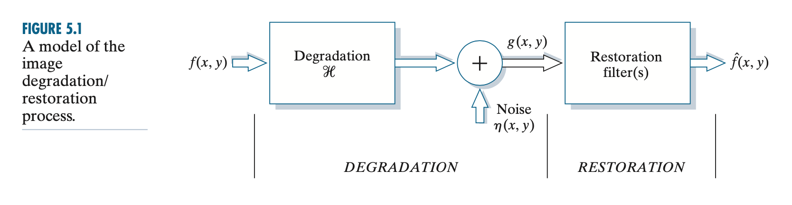
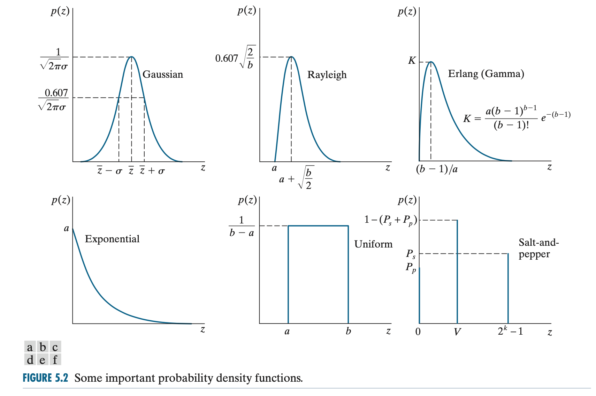
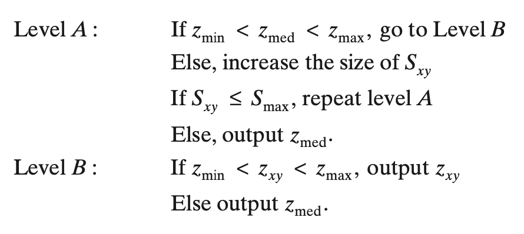
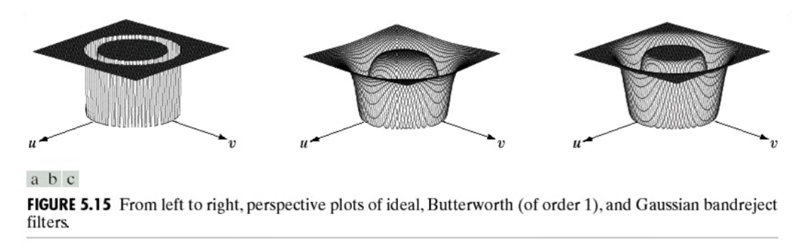
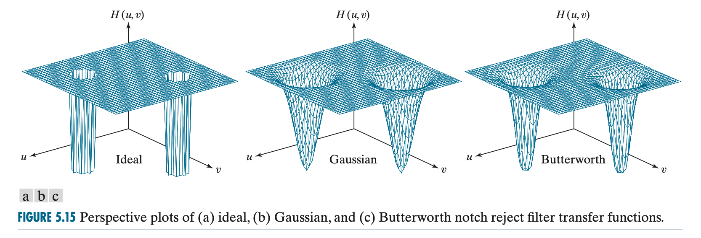

[图像处理]图像恢复与重建
图像退化/恢复模型
原图 \(f(x,y)\)，经由退化算子 \(\mathscr H\) 和加性噪声 \(\eta(x,y)\)，得到退化图像 \(g(x,y)\)；恢复后的图像记作 \(\hat f(x,y)\). 如图所示：

当 \(\mathscr H\) 是一个线性位置不变算子时，退化过程可以形式化作： \[ g(x,y)=(h\ast f)(x,y)+\eta(x,y) \] 其中 \(h(x,y)\) 是退化算子在空间域上的表示。等价地，在频域上有如下形式： \[ G(u,v)=H(u,v)F(u,v)+N(u,v) \] 这两个式子是本章的基础。
噪声模型
本节关注退化模型中的噪声项。
基本假设：噪声与位置无关（除了周期性噪声以外）、噪声与原图无关。
常见噪声 pdf
Gaussian 噪声 \[ p(z)=\frac{1}{\sqrt{2\pi}\sigma}e^{-\frac{(z-\bar z)^2}{2\sigma^2}},\quad-\infty<z<\infty \]
Rayleigh 噪声 \[ p(z)=\begin{cases}\dfrac{2}{b}(z-a)e^{-(z-a)^2/b}&z\geq a\\0&z<a\end{cases} \]
Erlang 噪声 \[ p(z)=\begin{cases}\dfrac{a^bz^{b-1}}{(b-1)!}e^{-az}&z\geq0\\0&z<0\end{cases} \]
指数噪声
\[ p(z)=\begin{cases}ae^{-az}&z\geq0\\0&z<0\end{cases} \]
均匀噪声
\[ p(z)=\begin{cases}\dfrac{1}{b-a}&a\leq z\leq b\\0&\text{otherwise}\end{cases} \]
椒盐噪声
\[ p(z)=\begin{cases}P_s&z=2^k-1\\P_p&z=0\\1-(P_s+P_p)&z=V\end{cases} \] 其中 \(0<V<2^k-1\). 换句话说，一个像素以 \(P_s\) 的概率变成 1，以 \(P_p\) 的概率变成 0，否则不变。

周期性噪声
周期性噪声是本章讨论的噪声中唯一一种与位置有关的噪声。后文将看到周期性噪声在频域上表现为明显的冲激，因此可以通过频域滤波消除。

噪声参数估计
周期性噪声可以通过观察傅立叶频谱图中的“尖峰”来估计，简单情况下也可以通过直接观察原图来估计。
对于其他噪声，我们可以首先选取一片背景颜色基本是常量的图像块，可视化其直方图来确定噪声类型，然后统计均值和方差来解 pdf 中的参数。
仅噪声退化的空间滤波
本节考虑仅有噪声项的退化，即： \[ \begin{align} &g(x,y)=f(x,y)+\eta(x,y)\\ &G(u,v)=F(u,v)+N(u,v) \end{align} \]
本节中用 \(S_{xy}\) 表示以 \((x,y)\) 为中心的、边长为 \(m,n\) 的小矩形邻域。
均值滤波器
算数均值滤波器
\[ \hat f(x,y)=\frac{1}{mn}\sum_{(r,c)\in S_{xy}}g(r,c) \]
几何均值滤波器
\[ \hat f(x,y)=\left[\prod_{(r,c)\in S_{xy}}g(r,c)\right]^{1/mn} \]
谐波均值滤波器
\[ \hat f(x,y)=\frac{mn}{\displaystyle\sum_{(r,c)\in S_{xy}}\frac{1}{g(r,c)}} \]
对盐噪声有效，对椒噪声无效。
逆谐波均值滤波器
\[ \hat f(x,y)=\frac{\displaystyle\sum_{(r,c)\in S_{xy}}g(r,c)^{Q+1}}{\displaystyle\sum_{(r,c)\in S_{xy}}g(r,c)^{Q}} \]
其中 \(Q\) 被称作滤波器的阶数。当 \(Q>0\) 时，能去除椒噪声；当 \(Q<0\) 时，能去除盐噪声。当 \(Q=0\) 时退化为算术均值滤波器，当 \(Q=-1\) 时退化为谐波均值滤波器。
顺序统计滤波器
中值滤波器
\[ \hat f(x,y)=\mathop{\text{median}}_{(r,c)\in S_{xy}}\{g(r,c)\} \]
最大最小滤波器
\[ \hat f(x,y)=\max_{(r,c)\in S_{xy}}\{g(r,c)\},\quad\hat f(x,y)=\min_{(r,c)\in S_{xy}}\{g(r,c)\} \]
最大值滤波器可用于去除椒噪声，最小值滤波器可用于去除盐噪声。
中点滤波器
\[ \hat f(x,y)=\frac{1}{2}\left[\max_{(r,c)\in S_{xy}}\{g(r,c)\}+\min_{(r,c)\in S_{xy}}\{g(r,c)\}\right] \]
修正 alpha 均值滤波器
\[ \hat f(x,y)=\frac{1}{mn-d}\sum_{(r,c)\in S_{xy}}g_R(r,c) \]
其中 \(g_R(r,c)\) 表示将前 \(d/2\) 个最大值和前 \(d/2\) 个最小值去掉之后（赋为零）的像素值。
当 \(d=0\) 时退化为算数均值滤波器，当 \(d=mn-1\) 时退化为中值滤波器。
自适应滤波器
自适应滤波器依赖于滤波区域内的统计信息。
自适应、局部噪声消除滤波器
设 \(\sigma_\eta^2\) 表示噪声的方差，\(\bar z_{S_{xy}}\) 表示 \(S_{xy}\) 区域内的均值，\(\sigma^2_{S_{xy}}\) 表示 \(S_{xy}\) 区域内的方差。我们期望滤波器的表现为：
- 若 \(\sigma_{\eta}^2=0\)，返回 \(g(x,y)\)；
- 若 \(\sigma^2_{S_{xy}}>\sigma^2_\eta\)，返回一个接近于 \(g(x,y)\) 的值（因为高方差通常代表边缘）；
- 若 \(\sigma^2_{S_{xy}}=\sigma^2_\eta\)，则返回 \(S_{xy}\) 区域内的算术平均。
因此，一个自适应的滤波器可以设计为： \[ \hat f(x,y)=g(x,y)-\frac{\sigma^2_\eta}{\sigma^2_{S_{xy}}}\left[g(x,y)-\bar z_{S_{xy}}\right] \] 该方法唯一需要知道的先验知识是 \(\sigma_\eta^2\).
自适应中值滤波器
设 \(z_\min,z_\max,z_\text{med}\) 表示 \(S_{xy}\) 区域内的最小、最大和中值，\(z_{xy}\) 表示 \((x,y)\) 处的像素值，\(S_\max\) 表示邻域 \(S_{xy}\) 允许的最大大小。自适应中值滤波器的滤波步骤为：

基于频域滤波的周期性噪声过滤
前文提及，周期性噪声在傅立叶频谱上会出现两个关于原点对称的尖峰，因此可以使用带阻、带通和陷波滤波器。
带阻滤波器
理想带阻滤波器
\[ H(u,v)=\begin{cases} 1,&D(u,v)<D_0-\frac{W}{2}\\ 0,&D_0-\frac{W}{2}\leq D(u,v)\leq D_0+\frac{W}{2}\\ 1,&D(u,v)>D_0+\frac{W}{2}\\ \end{cases} \]
\(n\) 阶巴特沃斯带阻滤波器
\[ H(u,v)=\frac{1}{1+\left[\dfrac{D(u,v)W}{D^2(u,v)-D_0^2}\right]^{2n}} \]
高斯带阻滤波器
\[ H(u,v)=1-\exp\left({-\frac{1}{2}\left[\frac{D^2(u,v)-D_0^2}{D(u,v)W}\right]^2}\right) \]

带通滤波器
\[ H_{bp}(u,v)=1-H_{br}(u,v) \]
其中 \(H_{br}(u,v)\) 是相应的带阻滤波器。带通滤波器可以提取噪声模式。
陷波滤波器
理想陷波（带阻）滤波器
\[ H(u,v)=\begin{cases}0&D_1(u,v)\leq D_0\text{ or }D_2(u,v)\leq D_0\\ 1&\text{otherwise} \end{cases} \]
\(n\) 阶巴特沃斯陷波（带阻）滤波器
\[ H(u,v)=\frac{1}{1+\left[\dfrac{D_0^2}{D_1(u,v)D_2(u,v)}\right]^n} \]
高斯陷波（带阻）滤波器
\[ H(u,v)=1-\exp\left[-\frac{1}{2}\left(\frac{D_1(u,v)D_2(u,v)}{D_0^2}\right)\right] \]

最优陷波滤波器
当干扰较为复杂时，手工设计的滤波器也许会去除太多图像原有的信息，因此我们提出一个优化目标：最小化恢复图像 \(\hat f(x,y)\) 的局部方差。
假设我们使用陷波带通滤波器 \(H_\text{NP}(u,v)\) 进行频域滤波提取噪声模式，即： \[ N(u,v)=H_\text{NP}(u,v)G(u,v) \] 那么相应空间域下的模式为： \[ \eta(x,y)=\mathscr F^{-1}(H_\text{NP}(u,v)G(u,v)) \] 前文直接从退化图像中间去该噪声项即可得到原图的估计。然而，为了避免去除太多图像原有的信息，这里我们引入权重： \[ \hat f(x,y)=g(x,y)-w(x,y)\eta(x,y) \] 那么我们的目标就是找到最优的权重使得局部方差最小： \[ \begin{align} \min\quad&\sigma^2=\frac{1}{(2a+1)(2b+1)}\sum_{(r,s)\in S_{xy}}\left(\hat f(r,c)-\bar{\hat f}\right)^2\\ \text{where}\quad&\bar{\hat f}=\frac{1}{mn}\sum_{(r,s)\in S_{xy}}\hat f(r,c) \end{align} \] 代入 \(\hat f\) 得： \[ \sigma^2=\frac{1}{mn}\sum_{(r,s)\in S_{xy}}\Big\{[g(r,c)-w(r,c)\eta(r,c)]-\left[\bar g-\overline{w\eta}\right]\Big\}^2 \] 假设 \(w(x,y)\) 在邻域内不变，即 \(w(r,c)=w(x,y)\)，那么可知 \(\overline{w\eta}=w(x,y)\bar\eta\)，于是解上述优化问题，可以得到解为： \[ w(x,y)=\frac{\overline{g\eta}-\bar g\bar\eta}{\overline{\eta^2}-\bar\eta^2} \]
线性位置不变退化
本节假设噪声项为 \(0\)，并考虑线性位置不变的退化算子：
线性： \[ \mathscr H[af_1(x,y)+bf_2(x,y)]=a\mathscr H[f_1(x,y)]+b\mathscr H[f_2(x,y)] \]
位置不变： \[ \mathscr H[f(x-\alpha,y-\beta)]=g(x-\alpha,y-\beta) \]
那么： \[ \begin{align} g(x,y)&=\mathscr H[f(x,y)]=\mathscr H\left[\int_{-\infty}^{\infty}\int_{-\infty}^{\infty}f(\alpha,\beta)\delta(x-\alpha,y-\beta)\mathrm d\alpha\mathrm d\beta\right]\\ &=\int_{-\infty}^{\infty}\int_{-\infty}^{\infty}\mathscr H\left[f(\alpha,\beta)\delta(x-\alpha,y-\beta)\right]\mathrm d\alpha\mathrm d\beta\\ &=\int_{-\infty}^{\infty}\int_{-\infty}^{\infty}f(\alpha,\beta)\mathscr H\left[\delta(x-\alpha,y-\beta)\right]\mathrm d\alpha\mathrm d\beta\\ &=\int_{-\infty}^{\infty}\int_{-\infty}^{\infty}f(\alpha,\beta)h(x,\alpha,y,\beta)\mathrm d\alpha\mathrm d\beta\\ \end{align} \] 记 \(h(x,\alpha,y,\beta)=\mathscr H[\delta(x-\alpha,y-\beta)]\) 为系统 \(\mathscr H\) 的冲激响应，也称作点扩散函数 (PSF). 当 \(\mathscr H\) 线性位置不变时， \[ \mathscr H[\delta(x-\alpha,y-\beta)]=h(x-\alpha,y-\beta) \] 于是： \[ g(x,y)=\int_{-\infty}^{\infty}\int_{-\infty}^{\infty}f(\alpha,\beta)h(x-\alpha,y-\beta)\mathrm d\alpha\mathrm d\beta=(h\ast f)(x,y) \] 即本文开头提到的卷积。
估计退化函数
观察估计法
假设退化是线性位置不变的，选取一个信号比较强的子图像 \(g_s(x,y)\)，估计其原图像 \(\hat f_s(x,y)\)，那么退化函数为： \[ H_s(u,v)=\frac{G_s(u,v)}{\hat F_s(u,v)} \]
试验估计法
用产生退化图像的设备对一个脉冲进行退化，得到退化的冲激响应。设冲击强度为 \(A\)，那么： \[ H(u,v)=\frac{G(u,v)}{A} \]
模型估计法
大气湍流模型
\[ H(u,v)=\exp\left(-k(u^2+v^2)^{5/6}\right) \]
运动模糊模型
线性运动模糊： \[ g(x,y)=\int_0^T f(x-x_0(t),y-y_0(t))\mathrm dt \] 其傅立叶变换为： \[ \begin{align} G(u,v)&=\int_{-\infty}^{\infty}\int_{-\infty}^{\infty}g(x,y)e^{-j2\pi(ux+vy)}\mathrm dx\mathrm dy\\ &=\int_{-\infty}^{\infty}\int_{-\infty}^{\infty}\left[\int_0^T f(x-x_0(t),y-y_0(t))\mathrm dt\right]e^{-j2\pi(ux+vy)}\mathrm dx\mathrm dy\\ &=\int_0^T\left[\int_{-\infty}^{\infty}\int_{-\infty}^{\infty} f(x-x_0(t),y-y_0(t))e^{-j2\pi(ux+vy)}\mathrm dx\mathrm dy\right]\mathrm dt\\ &=\int_0^TF(u,v)e^{-j2\pi(ux_0(t)+vy_0(t))}\mathrm dt\\ &=F(u,v)\int_0^Te^{-j2\pi(ux_0(t)+vy_0(t))}\mathrm dt\\ &=F(u,v)H(u,v) \end{align} \] 若运动变量 \(x_0(t),y_0(t)\) 已知，则可以知道 \(H(u,v)=\int_0^Te^{-j2\pi(ux_0(t)+vy_0(t))}\mathrm dt\).
逆滤波
未完待续。